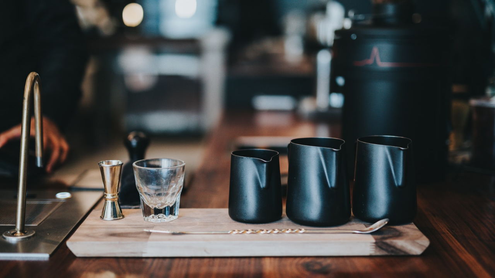

너는 카페 가면 뭐 봐?
넌 커피회사 다니니까.
커피회사 마케터로 일하며 자주 받았던 질문 중에 하나.
지금의 카페와 커피를 소비하는 방법. 아름답고 유니크한 공간 자체를 소비하고, 미식으로서 커피를 소비하기까지 과연 몇 년이나 걸렸을까? 폭발적 성장이라는 말도 식상한 속도. 이렇게나 빨리 한국 커피 문화가 성숙하면서 소비자 스탠더드도 같이 높아졌으니 정말 신나는 일이다.
벌써 한국 커피 씬은 실제 글로벌리 top급이다. 초기 스페셜티 플레이어들의 성장과 선도가 많은 기여를 했을 거라 생각한다.
그들이 어떤 생각으로 브랜드, 공간을 만드는지에 대한 이야기이기도 하고 “요즘은 어느 카페가 핫해? 넌 카페 가면 뭐 봐?” 에 대한 답이기도 한 이야기를 썰 풀듯 적어본다.
두번째, 사람에 대해 (1편-공간 보러가기)
여기서 사람은 두가지 타입으로 나뉜다.
바리스타와 고객. 이 글에서는 주로 바리스타의 직업적 프로페셔널함, 호스피탈리티 측면을 주로 이야기하고 싶다.
직업적 전문성, 프로페셔널함
카페에 방문하면 공간 측면에서도 바리스타라는 사람을 얼마나 배려했는가에 대해 주로 본 만큼, 바리스타 개개인의 태도에도 눈길이 많이 간다.
그 중에서도 특히 커피를 추출하는 과정 속 동작 하나하나가 어떠한지.
마치 운동선수의 동작을 구분지어 나눠보듯 한명의 플레이어로서 어떻게 치러내고 있는지 말이다.

(개인적으로는, 바에 설 때 향수를 뿌리거나 향이 강한 핸드크림을 사용하는 바리스타는 프로페셔널하지 못하다는 생각이다.
우리가 느끼는 맛 중 70~80%는 후각에 의존한다고 하는데, 커피에서 막 핸크맛 날 것 같고 그래.)

아무튼, 그라인더 관리상태부터 원두상태, 추출수의 온도, 우유 스티밍 사운드(찢어지는 끼익끼익인지 꼬로롥 몽글몽글인지), 바의 미장 플라스Mise en Place(고객에게 제공하기 위하여 완벽한 사전준비) 등.
사소한 사람의 제스쳐들까지 추출에 얼마나 열심을 기하는지 프로페셔널한지에 따라 커피 맛에 대한 기대가 높아지기도 하고, 동작 사이마다 청결에 얼마나 신경 쓰는지를 보며 매장 전체 청결에 믿음을 갖기도 한다.
 한명이 주문을 받고나서 음료 제조까지 쭉 이어한다면 카드나 현금을 만진 뒤 <=> 컵과 커피를 만지기 전 그 사이에 손을 씻는지 같은 당연한 일들에도 눈길이 간다.
한명이 주문을 받고나서 음료 제조까지 쭉 이어한다면 카드나 현금을 만진 뒤 <=> 컵과 커피를 만지기 전 그 사이에 손을 씻는지 같은 당연한 일들에도 눈길이 간다.
실제로 한 카페에서 계산하면서 “화장실은 어딘가요?”라고 물었더니,
“열쇠를 가져가셔야 해요”라며 소독제를 꺼내 키링 전체에 칙칙 뿌리고 키친타올로 슥슥 닦은 뒤 키친타올로 그대로 키를 집어 내게 건네준 적이 있었다.
와우! 정말 와우포인트다.
그 즉시 청결신뢰 100점 등극과 동시에 나는 그 곳에 마음을 다 줄 수 밖에 없었다.
물론 이외의 전반적인 공간이나 서비스도 align되어 있었으니 이 행동이 나에게 더 와닿았겠지.
하나를 보면 열을 안다는 식상한 말이 관통하는 순간이다.
이렇듯 잔인하게도 한 사람이 만드는 몇초~몇분의 동작과 몸짓들이 고객이 판단하기엔 충분조건일 수 있다.
그만큼 바리스타 한 명이 줄 수 있는 신뢰의 크기가 크다는 것 이기도 한데, 반대의 경우를 생각하면 굉장히 무서운 일이다. (몇초~몇분만에 누군가 나를 판단하고 인상짓는다고 생각해보라.)
결국엔 바리스타의 전문성에 대한 이야기다.
얼마나 전문성있는 바리스타가 바에 있는지. 오늘 내 모닝 커피는 기대해도 될 지.
사람 - 프로페셔널 - 여기서 더 나아가면 ‘‘시스템’‘에 대한 이야기로 연결되는데, 언젠가 다룰수 있으면 좋겠다.
팀 운영에 대해

가끔은 바리스타에게 권한이 없어 응대의 유연성이 떨어지는 경험을 한다.
운영자(사장..님..) 관점에서 보더라도 이정도 권한은 바리스타에게 주는게 훨씬 더 좋은 고객경험을 만들어 선순환시킬 수 있을텐데 라는 생각이 들게 하는 부분들.
예를 들어, 손님이 얼마 못마신 커피를 쏟았을 때 요청이 없더라도 먼저 다시 만들어준다던가 -더 좋은 예가 있으면 좋으련만- 하는, 손님으로서 ‘이정도는 해줄 수 있는거 아닌가?’싶게 애매하게 아쉬운 마음이 들 때.
바리스타가 이런 예외성을 띈 케이스들을 공감하며 해결해 주면, 감동으로 확 역관광시킬 수 있다는거다.
센스를 부릴 권한이 만드는 가치는 계산할 수도 없다.
브랜딩/마케팅 활용
때로는 유도리라는게 어뷰징을 생산해내기도 하니 개인카페가 아닌 기업/팀으로 운영되는 곳이라면 조심스럽게 써야할 수도 있다.
모든 케이스에 유도리 대응방안1,2,3… 을 마련할 수는 없겠지만 사소하게 보이는 이 부분까지도 내부브랜딩 관점에서 단단하게 만들어갈 필요가 있다고 생각한다.
예를 들어, 전반적으로 고객을 대하는 태도는 ‘친구의 친구를 대하듯 친근하지만 예의있게 대하라’ 같은 가이드여도 좋다.
우리 브랜드는 실제로 이런 태도를 권했다.
각자에게 주어지는 권한 안에 펼쳐지는 다양한 현장의 케이스들을 겪고 그 데이터를 모아보면 분명 브랜드 인사이트가 보인다.
주로 고객은 우리에게 어떤걸 기대한다. 주로 어떤걸 고마워한다. 아쉬워한다. 같은 추상적인 집합으로 만들어낼 수 있는 브랜드 가치와 브랜드 마케팅 활동은 무한해진다.
그렇게 유연한 통일성이 만들어지고 유기적으로 살아 움직이는 브랜드가 된다.
전체 구성원의 브랜드 감도가 높은 수준으로 싱크된다. (그놈의) 인터널브랜딩은 이렇게도 만들어질 수 있다.
물론 온라인/디지털마케팅에서처럼 즉각적인 수정 반영이나 A/B테스트로 값을 얻어낼 수는 없지만 날카로운 관찰을 통해 쌓은 오프라인에서도 데이터와 포스POS등에 기록되는 결제관련 데이터를 함께 뽑아 분석하겠다 마음만 먹으면 충분히 가능하고, 훨씬 더 풍성한 인사이트를 얻을 수 있다.
게다가 이렇게까지 하는곳이 잘 없기 때문에 더 섬세한 고객경험을 제공할 기회를 찾을 수 있다.